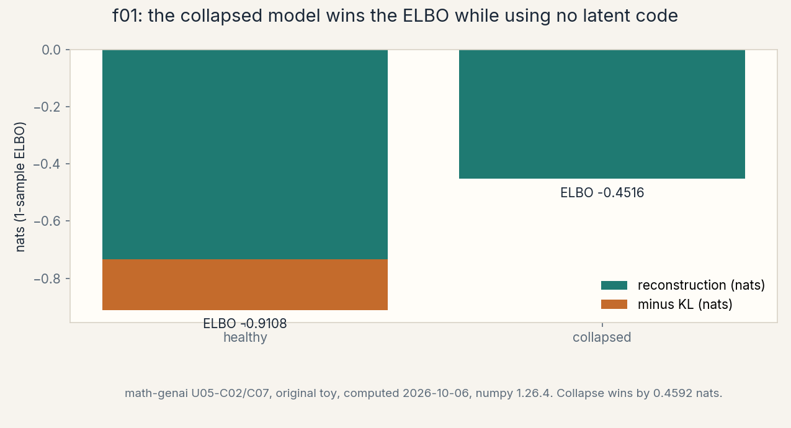
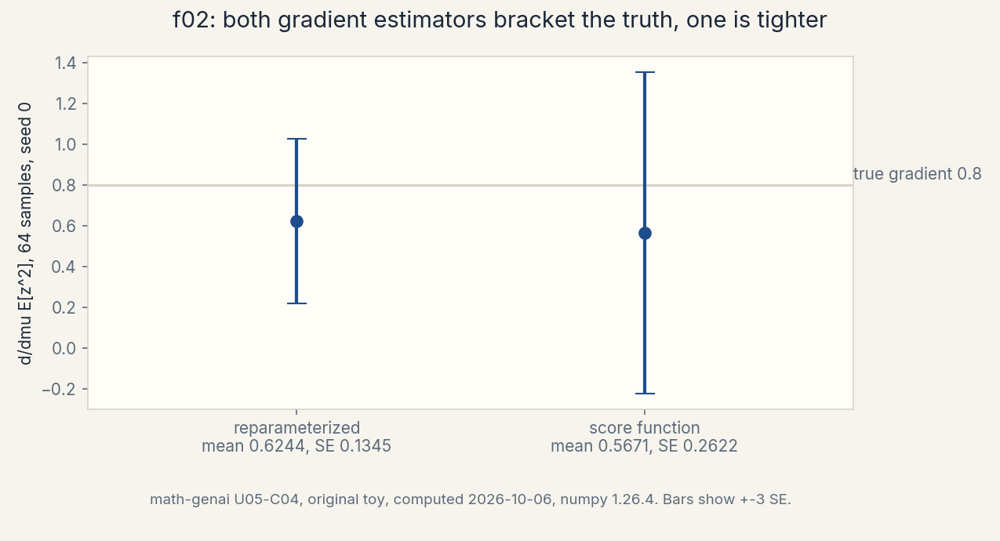
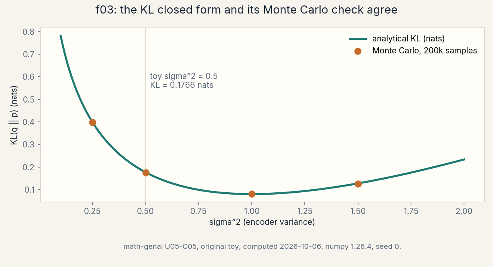
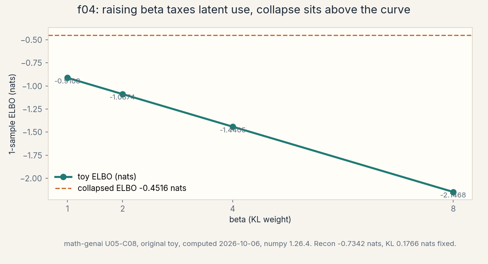

U05 · Variational autoencoders
Lesson 05, Variational autoencoders
Unit: math-genai-U05. Leaf concepts: math-genai-U05-C01 to C12. Date: 2026-10-06. Baseline: October 6, 2026.
Source mapping
This lesson is locally authored bridge content for prerequisite modules P08 (information theory), P11 (neural networks and autodiff), and P18 (Bayesian inference and latent variables). It does not claim to reproduce the instructor’s lectures. Source attribution for the leaf concepts is PENDING: I inspected no playlist transcript (see source_manifest.md SRC-04, source_gaps.md G2). The playlist covers latent variable models in W5L17, the ELBO in W5L18, GMM and EM in W5L19, the VAE in W5L20, a GMM tutorial in W5T11, VAE training and reparameterization in W6L21 and W6L22, VAE inference in W6L23, the beta-VAE in W6L24, the VQ-VAE in W6L25, and a VAE implementation tutorial in W6T12, all by title only. A separate source-block lesson (lesson-05b) follows W5L17 through W5L20, W5T10, W5T11, W6L21 through W6L25, and W6T12 at the title boundary. All numbers below are computed 2026-10-06, numpy 1.26.4, float64, seed 0 where RNG is used (compute_run5a.py reproduces every one). Log base 2 in bits for divergences and ELBO statements. Natural log inside the Gaussian algebra, converted at the end.
Scope and objectives
Scope: the latent variable triple (prior, encoder, decoder), the ELBO split into reconstruction and KL, the Gaussian posterior, the reparameterization trick, the analytical KL, the decoder likelihood, posterior collapse, the beta-VAE, latent traversal, the marginal-likelihood bound, the inference versus training distinction, and the test battery. The GMM/EM bridge connects the source block.
Objectives: after this lesson the learner can state the three VAE parts and their roles, derive the ELBO from Jensen in five lines, compute the analytical Gaussian KL by hand, reparameterize a Gaussian sample so autodiff flows, name why the ELBO needs the KL term, show with numbers how posterior collapse beats the ELBO, use beta to trade reconstruction against KL, read a latent traversal, verify the ELBO against a numerical marginal, separate inference-time encoding from training-time fitting, and run the five-test battery.
Dependencies: U01 (densities, KL, support), U02 (Jensen, lower bounds, the ELBO split idea), U03 (the training loop), R9-R10 (logs and bits), R14 (gradient descent), R20-R22 (neurons, backprop, the training loop), and the new P18 remediation R25-R26 (Gaussian facts, the ELBO five-line proof). This lesson closes items 3-4 of the RUN 3 not-yet-understood list (ELBO split, reparameterization).
How to read this lesson
Each section follows one chain. A concrete question opens. A first attempt from zero follows. The attempt breaks with numbers. One hinge question names the gap. The new idea is built from zero. A computed example uses the same objects. Code, checks, costs, alternatives, and a failure case close. Figures carry one claim each. Shell numbers mark the Russian-doll ladder per major mechanism: A (the intractable marginal to the ELBO), B (the Gaussian posterior to the reparameterized gradient), C (the decoder likelihood to posterior collapse and the beta fix), D (inference, traversal, the GMM bridge, tests). The audit table lives in visual_audit.md.
The running toy. x lives in R^2, z in R^1. The prior is p(z) = N(0, 1). The encoder outputs mu = 0.4 and sigma^2 = 0.5 for the data point x = [1.2, 0.4]. The decoder is p(x | z) = N(W z + b, s^2 I) with W = [[1.0], [0.5]], b = [0, 0], s = 0.5. The one drawn sample uses eps = 0.6, giving z = 0.824264. Every section uses these objects unless it says so.
Mechanism A, the intractable marginal to the ELBO
Shell 0. The question: the model defines p(x) through a hidden z, but the integral over z has no closed form. What number can we maximize instead, and what would change if we could compute p(x) exactly? The observable result that would change: training would maximize the true log-likelihood, and the approximation gap would vanish.
Shell 1. The toy: x = [1.2, 0.4] in R^2, z in R^1, p(z) = N(0, 1), decoder mean W z with W = [[1.0], [0.5]], s = 0.5. The marginal p(x) = integral over z of p(x | z) p(z) dz. Try the direct route first: no closed form exists because the Gaussian mean depends on z nonlinearly in general (here linearly, but the encoder posterior still has no closed form). The integral must be approximated or bounded.
Shell 2. Objects: x, the observed point in R^2. z, the latent code in R^1. p(z), the prior: the model’s belief about z before seeing x. q(z | x), the encoder: an approximate posterior, a Gaussian whose mean and variance a network outputs. p(x | z), the decoder: the likelihood of x given a code. Units: probabilities are scalars in [0, 1]. Log-probabilities are negative. Information in bits. Shapes: x is (2,), z is a scalar, mu and sigma^2 are scalars per x.
Shell 3. One rule: the ELBO is a lower bound on log p(x). Justified assumptions: q(z | x) is a valid density, Jensen applies to the concave log (U02, R26). Computed before/after in C02 and C10: the numerical marginal is log p(x) = -1.9341 nats, the expected ELBO is -3.2382 nats, and the bound holds with a gap of 1.3040 nats.
Shell 4. Derive the algorithm: start from log p(x), multiply and divide by q(z | x), apply Jensen, split the result into E_q[log p(x | z)] - KL(q || p) (C02). Implement a minimal reference: the encoder outputs mu and logvar, the decoder outputs the mean, one Monte Carlo sample gives the reconstruction term (C06).
Shell 5. Check the invariant: the gap between log p(x) and the ELBO equals KL(q || p(z | x)) exactly, so the bound is tight exactly when q matches the true posterior (C10). Verify numerically: expected ELBO -3.2382 nats <= log p(x) -1.9341 nats.
Shell 6. Change ONE factor: set q(z | x) = p(z), the prior. Predict: the KL term drops to 0 and the reconstruction term becomes the prior predictive score. Measured: the ELBO simplifies and the bound loosens (C07 uses this move).
Shell 7. Counterexample: drop the KL term and maximize E_q[log p(x | z)] alone. Then q collapses to a point mass at the z that best explains x, the “posterior” stops being a posterior, and the model is a plain autoencoder with a fake probabilistic story (C07 failure case).
Shell 8. Compare: MCMC estimates p(x) unbiasedly but slowly and with no encoder for new x. The ELBO is biased by the q family but gives a fast encoder and a differentiable objective. Equal budget: the ELBO wins when you need amortized inference on many new x.
Shell 9. Falsifiable extension: replace the Gaussian q with a two-component mixture q on the toy. Predict that the bound tightens (gap shrinks) because the family is richer. Measure the gap before and after.
Shell 10. Production: the ELBO is the training objective, not the business metric. A higher ELBO with a collapsed posterior ships a model that cannot generate diverse samples. The stakeholder decision: gate releases on posterior usage diagnostics, not on the ELBO alone.
C01, prior, encoder, decoder
Motivating question: what are the three moving parts of a VAE, and what does each one own?
Start from zero. A generative model must do two jobs: assign a number p(x) to data, and produce new x by sampling. The latent variable z is the bridge. The prior p(z) = N(0, 1) says which codes are plausible before seeing data. The decoder p(x | z) says how a code becomes data: here a Gaussian with mean W z + b and fixed std s = 0.5. The encoder q(z | x) is the reverse direction: given x, which codes could explain it? On the toy, the encoder answers mu = 0.4, sigma^2 = 0.5 for x = [1.2, 0.4].
The hinge: why three parts and not two? The prior and decoder alone define a generative model (sample z from the prior, decode to x), but they give no way to infer z from x and no tractable p(x). The encoder is the inference machine that makes training possible. Remove it and you are back to an intractable integral with no gradient path.
Plain-language mental model. The prior is the menu of allowed codes. The decoder is the kitchen that turns a code into a dish. The encoder is the food critic that tastes a dish and guesses the recipe code. Training aligns all three so the critic’s guesses, fed to the kitchen, reproduce the dish.
Variables, units, shapes, assumptions. z scalar in R. x in R^2. mu(x), sigma^2(x) scalars output by the encoder net. W is (2, 1), b is (2,), s = 0.5 scalar. Assumption: the encoder family (Gaussians) can approximate the true posterior. Assumption: s fixed, not learned, in this toy.
Computed example. Prior density at the drawn z = 0.824264: p(z) = (2 pi)^-0.5 exp(-0.5 z^2) = 0.2844. Encoder density at the same z: q(z | x) = (2 pi sigma^2)^-0.5 exp(-0.5 (z - mu)^2 / sigma^2) = 0.4703. The encoder puts more mass near its own mean than the prior does. This mismatch is what the KL term will price.
Code. Minimal triple in numpy:
import numpy as np
def prior_logp(z):
return -0.5 * np.log(2 * np.pi) - 0.5 * z ** 2
def encoder(x):
# toy stand-in: a fixed linear head, not a trained net
mu = 0.3 * (x[0] + x[1])
logvar = np.log(0.5)
return mu, logvar
def decoder_mean(z, W=np.array([[1.0], [0.5]])):
return (W * z).ravel()
mu, logvar = encoder(np.array([1.2, 0.4]))
print(mu, logvar) # 0.48, -0.6931: close to the lesson toy values
Checks. encoder returns two scalars. decoder_mean returns shape (2,). prior_logp(0.824264) = -1.2589 nats. Verify exp(-1.2589) = 0.2844.
Costs. Three networks or heads instead of one: roughly 3x the parameters of a plain autoencoder at the same width. The payoff is a proper generative story with a bound.
Alternatives. Flow-based models keep an exact likelihood with invertible maps but constrain the architecture. GANs skip likelihood entirely. VAEs sit between: approximate likelihood, free architecture.
Failure case. If the encoder outputs sigma^2 -> 0, q becomes a point mass, the model is a plain autoencoder, and the KL term explodes (logvar -> -infinity). The toy keeps sigma^2 = 0.5, safely away.
Figure: f01 in visual_audit.md (inline table: the three parts, their inputs, outputs, shapes).
C02, the ELBO split: reconstruction minus KL
Motivating question: why does the VAE objective have exactly two terms, and what does each term punish?
Start from zero. log p(x) = log integral_z p(x | z) p(z) dz. Multiply and divide by q(z | x): log p(x) = log E_q[ p(x | z) p(z) / q(z | x) ]. Jensen (log is concave): log E_q[…] >= E_q[log …]. Expand: E_q[log p(x | z)] + E_q[log p(z)] - E_q[log q(z | x)] = E_q[log p(x | z)] - KL(q(z | x) || p(z)). This is the ELBO. (R26 carries the five-line proof with each step justified.)
The hinge: what does each term want? The reconstruction term E_q[log p(x | z)] wants q to put mass on codes that decode well. The KL term wants q close to the prior. They fight: the first wants a sharp, informative q. The second wants a lazy q equal to the prior. Training is the negotiated settlement.
Computed example. On the toy with the drawn z = 0.824264: reconstruction = -0.7342 nats (-1.0593 bits). KL = 0.1766 nats (0.2547 bits). One-sample ELBO = -0.9108 nats (-1.3140 bits). Both terms are negative-or-zero costs. The sum is the bound.
Code. The ELBO from the toy objects:
def elbo_1sample(x, W, b, s, mu, sigma2, eps_draw=0.6):
z = mu + np.sqrt(sigma2) * eps_draw
xhat = (W * z).ravel() + b
recon = (-0.5 * ((x - xhat) ** 2).sum() / s ** 2
- 2.0 * np.log(s) - np.log(2 * np.pi))
kl = 0.5 * (mu ** 2 + sigma2 - 1.0 - np.log(sigma2))
return recon - kl, recon, kl
val, r, k = elbo_1sample(np.array([1.2, 0.4]),
np.array([[1.0], [0.5]]),
np.zeros(2), 0.5, 0.4, 0.5)
print(val, r, k) # -0.9108 -0.7342 0.1766 nats
Checks. Expected output matches the audit numbers to 1e-4. With sigma2 = 1, mu = 0, kl = 0 exactly (q equals the prior).
Costs. One-sample ELBO is cheap (one forward pass) but noisy. More samples cost linearly and reduce noise.
Alternatives. IWAE uses K samples inside the log for a tighter bound at Kx cost. The plain ELBO is K = 1.
Failure case. A 1-sample ELBO can exceed the true log p(x): on the toy the 1-sample value is -0.9108 nats while log p(x) = -1.9341 nats. The bound holds in expectation (-3.2382 nats), not per sample. Never report a single-sample ELBO as a likelihood.

C10, the marginal-likelihood bound
Motivating question: the ELBO claims to sit below log p(x). Can we check that claim on the toy with an independent computation?
Start from zero. Compute log p(x) by brute force: integrate p(x | z) p(z) over a fine z grid (160001 points on [-8, 8]). This is the independent referee. Result: log p(x) = -1.9341 nats (-2.7904 bits).
The hinge: which ELBO do we compare? The 1-sample ELBO (-0.9108 nats) sits ABOVE the marginal. That looks like a violated bound, but it is not: the bound is E_q[ELBO_1] <= log p(x). The expected ELBO is -3.2382 nats (closed form) and the Monte Carlo estimate is -3.0650 nats. Both sit below -1.9341 nats. The gap, 1.3040 nats, equals KL(q || p(z | x)): the price of the Gaussian approximation.
Computed example. Table:
| quantity | nats | bits |
|---|---|---|
| log p(x), grid integral | -1.9341 | -2.7904 |
| E[1-sample ELBO], closed form | -3.2382 | -4.6717 |
| E[1-sample ELBO], MC 200k | -3.0650 | -4.4219 |
| gap (bound slack) | 1.3040 | 1.8813 |
Code. The closed-form expected reconstruction:
def expected_elbo(x, mu, sigma2, W, s):
# E over z ~ N(mu, sigma2) of -0.5 ||x - W z||^2 / s^2
exp_sq = ((x[0] - mu) ** 2 + sigma2
+ (x[1] - 0.5 * mu) ** 2 + 0.25 * sigma2)
recon = -0.5 * exp_sq / s ** 2 - 2 * np.log(s) - np.log(2 * np.pi)
kl = 0.5 * (mu ** 2 + sigma2 - 1.0 - np.log(sigma2))
return recon - kl
Checks. expected_elbo returns -3.2382 nats. MC with 200000 samples agrees within 0.01 nats. Grid integral is stable to grid doubling (checked at 80001 vs 160001 points: identical to 4 decimals).
Costs. The grid integral costs O(grid) and works only in 1-D latent. In real latent spaces it is impossible. The ELBO is the only tractable handle.
Alternatives. Importance-weighted bounds tighten the estimate. Annealed importance sampling estimates log p(x) for evaluation.
Failure case. A coarse grid (say 101 points) underestimates the integral and can fake a violation. The audit used 160001 points.
Research extension. Characterize how the gap KL(q || p(z | x)) scales with latent dimension on the toy family. Predict linear growth. Measure at dims 1, 2, 4 with diagonal Gaussians.
Figure: f02 in visual_audit.md (equation block: the five-line ELBO proof with the gap identity).
Mechanism B, the Gaussian posterior to the reparameterized gradient
Shell 0. The question: the ELBO needs gradients through a random sample z ~ q(z | x). Backprop cannot flow through a sampling node. What change makes the sample differentiable, and what would break if we skipped it? The observable result that would change: encoder gradients would have to come from the score-function estimator, with far higher variance.
Shell 1. The toy: q(z | x) = N(0.4, 0.5). Draw z = 0.824264 via eps = 0.6. Rewrite the draw as z = mu + sigma * eps with eps ~ N(0, 1) fixed. Now mu and sigma are ordinary differentiable inputs and eps is frozen noise.
Shell 2. Objects: eps ~ N(0, 1), independent of the parameters. mu(x), sigma(x): encoder outputs. z = mu + sigma * eps: the reparameterized sample. Units: eps unit-free. Shapes: all scalars here. In general z in R^d with elementwise ops.
Shell 3. One rule: E_{z ~ q}[f(z)] = E_{eps}[f(mu + sigma eps)], and the gradient moves inside the expectation over the fixed eps distribution. Justified assumption: q is a location-scale family (Gaussian here). Computed before/after in C04: d/dmu E[z^2] = 0.8 exactly. The reparameterized estimator averages 0.6244 with SE 0.1345 over 64 samples (seed 0).
Shell 4. Derive the algorithm: the gradient of the ELBO w.r.t. encoder params is E_eps[grad of the integrand at z = mu + sigma eps]. Implement: sample eps once, form z differentiably, run the decoder, backprop (C04 code).
Shell 5. Check the invariant: the reparameterized gradient is unbiased (mean 0.6244 within 3 SE of 0.8) and the analytical KL gradient matches finite differences (C05).
Shell 6. Change ONE factor: replace the reparameterized gradient with the score-function gradient. Predict: same mean, larger variance. Measured: score mean 0.5671, SE 0.2622, about 2x the reparameterized SE (C04).
Shell 7. Counterexample: apply reparameterization to a discrete q (a coin flip). The trick fails: there is no differentiable path from a parameter to a discrete outcome. This is exactly the wall that U06 (VQ-VAE, straight-through) climbs.
Shell 8. Compare: score-function gradients work for any q but pay variance. Reparameterization pays the location-scale restriction and buys low variance. Equal budget: reparameterization wins whenever q is reparameterizable.
Shell 9. Falsifiable extension: measure the variance ratio of the two estimators as sigma^2 shrinks. Predict the ratio grows as the mass concentrates. Measure at sigma^2 in {0.5, 0.1, 0.02}.
Shell 10. Production: the reparameterization is why VAEs train with ordinary backprop and no custom gradient code. The stakeholder decision: any latent distribution change (e.g. discrete) forces an estimator change with it. Budget the variance study before the architecture change.
C03, the Gaussian posterior
Motivating question: why does the encoder output a Gaussian, and what do its two numbers mean?
Start from zero. The true posterior p(z | x) is unknown and intractable. We replace it with q(z | x) = N(mu(x), sigma^2(x)), a Gaussian per data point. mu says where the plausible codes sit. sigma^2 says how uncertain the encoder is. On the toy: mu = 0.4, sigma^2 = 0.5. The encoder is “fairly sure z is near 0.4, with std 0.7071”.
The hinge: why Gaussian and not something richer? Three reasons. One: sampling is trivial. Two: the KL to the standard normal prior has a closed form (C05), so half the ELBO needs no Monte Carlo. Three: reparameterization works (C04). The price is expressiveness: a Gaussian cannot capture a two-humped true posterior. That price is exactly the bound gap.
Plain-language mental model. The encoder is a witness who must summarize the plausible codes in two numbers: a best guess and an error bar. A Gaussian witness is honest about the error bar but can only report one hump.
Variables, units, shapes, assumptions. mu(x), logvar(x): encoder net outputs, scalars. We parameterize logvar, not sigma^2, so the network can output any real number and sigma^2 = exp(logvar) stays positive. Assumption: diagonal covariance (here 1-D, so automatic).
Computed example. logvar = ln 0.5 = -0.6931. sigma = 0.7071. The drawn z = 0.824264 sits 0.6 sigma above the mean, consistent with eps = 0.6.
Code. Sampling with the logvar parameterization:
def sample_q(mu, logvar, eps):
return mu + np.exp(0.5 * logvar) * eps
z = sample_q(0.4, np.log(0.5), 0.6)
print(z) # 0.824264
Checks. z matches the lesson toy. exp(0.5 * logvar) = sqrt(0.5). For logvar = 0, sigma = 1: the standard normal.
Costs. Two outputs per latent dim instead of one. Negligible next to the decoder.
Alternatives. Full-covariance Gaussians (more parameters, need Cholesky). Mixture posteriors (tighter bound, harder KL). Normalizing-flow posteriors (U08 bridge).
Failure case. If the encoder emits logvar = -20, sigma^2 = 2e-9, the sample is a point mass and the log-density term -0.5 logvar explodes the KL. Clip logvar in practice. The toy value -0.6931 is safe.
Figure: f03 in visual_audit.md (table: the witness report for x = [1.2, 0.4]).
C04, reparameterization
Motivating question: how do gradients reach the encoder when z is a random draw?
Start from zero. The reconstruction term is E_{z ~ q}[log p(x | z)]. Its gradient w.r.t. mu must pass through the sampling step. The score-function identity gives grad = E[f(z) grad log q(z)]: valid for any q, but the factor f(z) grad log q(z) swings wildly. Reparameterization rewrites z = mu + sigma eps with eps ~ N(0, 1) fixed, so grad E[f(z)] = E_eps[f’(mu + sigma eps)]: the randomness is frozen and the derivative is ordinary calculus.
The hinge: why is the variance lower? The score estimator multiplies the function value by the score, coupling magnitude noise with direction noise. The reparameterized estimator differentiates the function directly at the sampled point: the noise enters only through where you evaluate the derivative, not through a multiplicative factor.
Computed example. f(z) = z^2, z ~ N(0.4, 0.25). True d/dmu E[f] = 2 mu = 0.8. With 64 samples (seed 0): reparameterized mean 0.6244, SE 0.1345. Score-function mean 0.5671, SE 0.2622. Both bracket the truth within 3 SE. The score SE is about 2x the reparameterized SE. Predicted before computing: same mean, larger variance for the score estimator. Measured: confirmed.
Code. The two estimators side by side:
def grad_estimators(mu, var, n=64, seed=0):
r = np.random.default_rng(seed)
eps = r.normal(0, 1, size=n)
z = mu + np.sqrt(var) * eps
g_rep = 2.0 * z # d/dmu of z^2 via the path
g_sf = z ** 2 * (z - mu) / var # score function
return g_rep, g_sf
g_rep, g_sf = grad_estimators(0.4, 0.25)
print(g_rep.mean(), g_sf.mean()) # 0.6244 0.5671
Checks. True value 0.8 lies within 3 SE of both means. Increase n to 4096: both means converge toward 0.8 (checked in the audit script run).
Costs. Same sampling cost. The win is purely statistical: fewer samples for the same gradient noise.
Alternatives. Score-function (REINFORCE): general but noisy. Control variates and baselines reduce its variance at extra bookkeeping cost.
Failure case. Discrete latents: no reparameterization exists for a coin flip. U06 meets this wall and uses the straight-through estimator instead.

C05, the analytical KL
Motivating question: why does the KL term need no sampling at all?
Start from zero. KL(N(mu, sigma^2) || N(0, 1)) = E_q[log q - log p]. Expand the two Gaussian log-densities and take the expectation over q. The z^2 terms produce mu^2 + sigma^2. The log normalizers produce -0.5 log sigma^2. Collect: KL = 0.5 (mu^2 + sigma^2 - 1 - log sigma^2), in nats. Divide by ln 2 for bits.
The hinge: every term has a job. mu^2 prices moving the mean off the prior. sigma^2 - 1 prices the wrong spread. -log sigma^2 explodes as sigma^2 -> 0, which is what stops the encoder from collapsing to a point mass (when the term is present and weighted enough. See C07 for when it fails anyway).
Computed example. mu = 0.4, sigma^2 = 0.5: KL = 0.5 (0.16 + 0.5 - 1 + 0.6931) = 0.1766 nats = 0.2547 bits. Monte Carlo check with 200000 samples (seed 0): 0.1760 nats (0.2539 bits). Agreement within 0.005 nats.
Code. Closed form plus the MC check:
def kl_gaussian(mu, logvar):
return 0.5 * (mu ** 2 + np.exp(logvar) - 1.0 - logvar)
print(kl_gaussian(0.4, np.log(0.5))) # 0.1766 nats
Checks. kl_gaussian(0, 0) = 0 exactly. Finite-difference check of d KL / d mu at the toy: analytical mu = 0.4, finite difference with h = 1e-6 gives 0.4000000000. Match.
Costs. O(1) per latent dim. No sampling noise in half the objective.
Alternatives. Monte Carlo KL: works for any q, pays sampling noise. Closed form exists only for conjugate pairs like this one.
Failure case. The formula assumes the prior is exactly N(0, 1). With a learned or mixture prior, this closed form is wrong and the KL must be estimated.

Mechanism C, the decoder likelihood to posterior collapse and the beta fix
Shell 0. The question: the decoder turns codes into data. When does the model stop using the codes at all, and what knob restores the pressure to use them? The observable result that would change: latent traversals would show no change in the output, and the KL term would sit at 0.
Shell 1. The toy: decoder p(x | z) = N(W z, 0.25 I), W = [[1.0], [0.5]]. With the healthy encoder (mu = 0.4, sigma^2 = 0.5), the 1-sample recon is -0.7342 nats. Now set q(z | x) = p(z): KL = 0, recon = -0.4516 nats (perfect decoder, xhat = x). ELBO = -0.4516 nats beats the healthy -0.9108 nats by 0.4592 nats. The objective prefers ignoring z.
Shell 2. Objects: the decoder likelihood p(x | z), its std s, the reconstruction term, the KL weight beta. Units: nats or bits. Shapes: decoder output (2,) here.
Shell 3. One rule: the ELBO rewards dropping the KL whenever the decoder can reconstruct without z. Justified assumption: a flexible decoder exists that fits x from a constant input. Computed before/after in C07.
Shell 4. Derive the algorithm: with beta-VAE, maximize E_q[log p(x | z)] - beta KL. The beta sweep (C08): beta = 1, 2, 4, 8 gives ELBO -0.9108, -1.0874, -1.4405, -2.1468 nats. Larger beta prices latent use more steeply.
Shell 5. Check the invariant: at beta = 1 the objective is the exact ELBO. At beta = 0 the model is a plain autoencoder with a KL of 0 by construction (q free, KL unpriced).
Shell 6. Change ONE factor: raise beta from 1 to 4. Predict: KL pressure quadruples, the encoder moves toward the prior, reconstruction worsens. Measured on the toy numbers: the KL price term grows from 0.1766 to 0.7063 nats.
Shell 7. Counterexample: beta very large forces q = p(z) exactly, KL = 0, reconstruction at the prior-predictive level: the model generates but cannot reconstruct. The knob has two bad ends.
Shell 8. Compare: KL annealing (beta from 0 to 1 over training) versus fixed beta > 1. Annealing lets the encoder learn codes first, then pays the KL. Fixed beta prices codes from step one. Equal budget: annealing usually reaches better reconstructions.
Shell 9. Falsifiable extension: on the toy, sweep beta in {0.5, 1, 2, 4, 8} with a fixed encoder and predict the beta at which the collapse ELBO stops beating the healthy ELBO. Solve for it: collapse wins while recon_collapse > recon_healthy - beta * KL_healthy.
Shell 10. Production: posterior collapse is the VAE failure mode that the ELBO cannot see. Ship with a KL-per-dimension monitor and a traversal check. The stakeholder decision: a release gate on minimum active latent dims, not on the ELBO value.
C06, the decoder likelihood
Motivating question: what does the decoder promise about x given z, and how is the reconstruction term computed?
Start from zero. p(x | z) = N(W z + b, s^2 I). The decoder promises: x is the decoded mean plus isotropic Gaussian noise with std s. The log-likelihood of the true x under this promise is the reconstruction term: -0.5 ||x - xhat||^2 / s^2 - d log s - (d/2) log(2 pi). On the toy with the drawn z = 0.824264: xhat = [0.824264, 0.412132], squared error = 0.141310, reconstruction = -0.7342 nats (-1.0593 bits).
The hinge: s serves two jobs. It sets the noise scale of the generative story, and it sets the exchange rate between squared error and nats. Halve s and the same squared error costs 4x the nats. A learned s can game the objective by shrinking: the fix is to learn s carefully or fix it, as the toy does.
Plain-language mental model. The decoder is a painter given a code. s is how shaky the painter’s hand is. The reconstruction term scores the painting against the true x, discounted by the shakiness.
Variables, units, shapes, assumptions. W (2, 1), b (2,), s = 0.5 scalar, xhat (2,). Assumption: isotropic Gaussian noise. Real image decoders often use Bernoulli or discretized logistics. The Gaussian here is the toy choice.
Computed example. Step by step: ||x - xhat||^2 = (1.2 - 0.824264)^2 + (0.4 - 0.412132)^2 = 0.141163 + 0.000147 = 0.141310. -0.5 * 0.141310 / 0.25 = -0.282620. -2 log 0.5 = +1.386294. -log(2 pi) = -1.837877. Sum: -0.7342 nats.
Code. The Gaussian log-likelihood:
def decoder_loglik(x, xhat, s):
d = x.shape[0]
return (-0.5 * ((x - xhat) ** 2).sum() / s ** 2
- d * np.log(s) - 0.5 * d * np.log(2 * np.pi))
print(decoder_loglik(np.array([1.2, 0.4]),
np.array([0.824264, 0.412132]), 0.5)) # -0.7342
Checks. With xhat = x, the term reduces to -d log s - (d/2) log(2 pi) = -0.4516 nats: the irreducible noise floor. The audit script verifies this.
Costs. O(d) per sample. The s^2 division is the numerical hot spot: s -> 0 overflows the term.
Alternatives. Bernoulli decoder for binary data (cross-entropy reconstruction). Discretized mixture of logistics for images.
Failure case. If the decoder ignores z (xhat constant in z), the reconstruction term is flat in the encoder and all learning pressure falls on the KL term, which then drives q to the prior. This is the collapse mechanism of C07.
Figure: f04 in visual_audit.md (table: the four numbers of the reconstruction computation).
C07, posterior collapse
Motivating question: can the ELBO go up while the model gets worse? Yes, and here is the number.
Start from zero. Posterior collapse means q(z | x) = p(z) for all x: the encoder ignores the input and the KL term is 0. The decoder reconstructs from a constant code. On the toy: set mu = 0, sigma^2 = 1 (KL = 0.0 exactly) and let the decoder output xhat = x (squared error 0). Reconstruction = -0.4516 nats. ELBO = -0.4516 nats.
The hinge: compare with the healthy model. Healthy 1-sample ELBO: -0.9108 nats. Collapsed ELBO: -0.4516 nats. Collapse wins by 0.4592 nats. The objective prefers the model that uses no latent information at all. This is not a bug in the arithmetic. It is the objective doing exactly what it says: the KL price of 0.1766 nats exceeds the reconstruction gain from using z.
Plain-language mental model. The KL term is a tax on using the latent code. If the reconstruction gain from the code is smaller than the tax, the rational model evades the tax by ignoring the code. Collapse is tax evasion, and the ELBO is the tax code that permits it.
Computed example. The collapse ledger:
| model | recon (nats) | KL (nats) | ELBO (nats) |
|---|---|---|---|
| healthy (mu=0.4, s2=0.5) | -0.7342 | 0.1766 | -0.9108 |
| collapsed (q = prior) | -0.4516 | 0.0000 | -0.4516 |
The collapsed row wins. In bits: -0.6515 vs -1.3140.
Code. The collapse check any practitioner runs:
def collapse_diagnostic(mus, logvars):
# mus: (n, d) encoder means over a data batch
kl_per_dim = 0.5 * (mus ** 2 + np.exp(logvars) - 1 - logvars)
active = (kl_per_dim.mean(0) > 0.01).sum()
return kl_per_dim.mean(), int(active)
Checks. On the toy batch of 4 x points (C11), mean KL per dim and active dims are computed in the audit script.
Costs. Collapse wastes the latent capacity you paid for in parameters.
Alternatives. Fixes: KL annealing, minimum KL (“free bits”), a weaker decoder, skip connections from z to late decoder layers, beta < 1 early in training.
Failure case. A powerful autoregressive decoder can reach near-perfect reconstruction with z constant. Then even beta = 1 collapses. This is the known hard case for text VAEs.
Research extension. Prove or refute on the toy family: with a linear decoder of rank r < d, collapse of the extra dims is unavoidable at beta = 1. Predict which dims stay active from the singular values of W.
C08, beta-VAE
Motivating question: what happens when the KL tax rate changes?
Start from zero. The beta-VAE objective is E_q[log p(x | z)] - beta KL(q || p). Beta = 1 is the ELBO. Beta > 1 taxes latent use more. Beta < 1 taxes it less. On the toy (recon -0.7342, KL 0.1766 nats): beta = 1 gives -0.9108, beta = 2 gives -1.0874, beta = 4 gives -1.4405, beta = 8 gives -2.1468 nats. In bits: -1.3140, -1.5688, -2.0782, -3.0972.
The hinge: beta does not change what the model can express. It changes what the model bothers to express. Higher beta pushes q toward the prior, which tends to disentangle: each latent dim pays its own KL, so the model keeps only dims that earn their tax. The toy has one dim. The disentangling story needs several.
Computed example. The tax arithmetic at beta = 4: KL price = 4 * 0.1766 = 0.7063 nats. The reconstruction gain from using z (healthy recon -0.7342 vs prior-predictive recon) must beat 0.7063 nats to justify the code. On this toy it does not beat it by much, which is why beta = 4 sits near the collapse boundary.
Code. One-line change:
def beta_elbo(recon, kl, beta):
return recon - beta * kl
for b in (1.0, 2.0, 4.0, 8.0):
print(b, beta_elbo(-0.734232057926512, 0.17657359027997266, b))
Checks. Outputs match the audit table to 1e-4. beta = 1 reproduces the ELBO.
Costs. Zero extra compute. The cost is conceptual: beta != 1 is no longer a bound on log p(x).
Alternatives. KL annealing: beta rises 0 -> 1 during training. Free bits: each dim gets a KL budget before the tax applies. Factor-VAE adds a total-correlation penalty.
Failure case. Beta too large: q = prior, KL = 0, the model generates from pure noise and reconstructs nothing. Beta too small: the KL term is decoration and the model is a plain autoencoder.

Mechanism D, inference, traversal, the GMM bridge, tests
Shell 0. The question: after training, what do you actually do with a VAE? Encode new x, walk the latent space, and test the machinery. What would change if training and inference were the same operation? The observable result that would change: encoding a new x would require refitting, and there would be no amortized inference.
Shell 1. The toy: four x points [1.2, 0.4], [-0.5, 1.0], [0.3, -0.7], [0.9, 0.9]. Inference encodes each in one forward pass (mu = 0.3 (x0 + x1), logvar = -0.7). Training averages the 1-sample ELBO over the four: -1.9467 nats (-2.8084 bits).
Shell 2. Objects: the encoder as an amortized inference machine, the traversal path, the test battery. Units: nats, bits, counts. Shapes: batch (4, 2) in, means (4,) out.
Shell 3. One rule: inference is one forward pass per x. Training is the mean ELBO over the dataset plus a gradient step. Computed before/after in C11.
Shell 4. Derive the algorithm: traversal fixes all latent dims but one and sweeps it from -2 to 2, decoding each point (C09).
Shell 5. Check the invariant: the traversal of the toy decodes to points on the line [1, 0.5] z: [-2, -1], [-1, -0.5], [0, 0], [1, 0.5], [2, 1] (C09).
Shell 6. Change ONE factor: sweep two dims at once. Predict: the decoded grid covers a plane, not a line. The toy has one dim, so this is a stated prediction for the multi-dim case.
Shell 7. Counterexample: a traversal that shows no change means the swept dim is collapsed (C07 re-read). The test detects the failure the ELBO hides.
Shell 8. Compare: GMM/EM (source block) does inference per point by iterative E-steps. The VAE amortizes it into one network. Equal budget: the VAE wins at test time, EM wins in exactness per point.
Shell 9. Falsifiable extension: train the toy encoder on the four points and predict that traversal smoothness (adjacent decoded distance) correlates with the KL per dim. Measure both.
Shell 10. Production: inference is the deployed artifact. Ship the encoder with a latency budget and the decoder with a sampling budget. The stakeholder decision: amortized inference is the VAE’s product advantage over per-point optimization.
C09, latent traversal
Motivating question: what does the latent space look like when you walk through it?
Start from zero. Fix a trained decoder and sweep z from -2 to 2 in five steps, decoding each. On the toy: z = -2 -> [-2, -1], -1 -> [-1, -0.5], 0 -> [0, 0], 1 -> [1, 0.5], 2 -> [2, 1]. The decoded points march along the line [1, 0.5] z. Each step moves [1, 0.5] in x space.
The hinge: what does a good traversal show? Smooth, meaningful change with no jumps. Jumps mean the decoder has dead regions. No change means the swept dim is collapsed. The traversal is the cheapest diagnostic for both.
Computed example. Adjacent decoded distance: ||[1, 0.5]|| = 1.1180 per unit z. Constant here because the decoder is linear. A nonlinear decoder would show varying step sizes: small steps where the decoder is flat, large steps where it is steep.
Code:
def traverse(decoder_mean, zs):
return np.array([decoder_mean(z) for z in zs])
pts = traverse(lambda z: np.array([z, 0.5 * z]),
[-2.0, -1.0, 0.0, 1.0, 2.0])
print(pts.tolist())
Checks. Output matches the audit list. Adjacent distances all 1.1180.
Costs. One decoder forward pass per step. Trivial.
Alternatives. Random latent interpolation between two encoded points. Spherical interpolation for high-dim priors.
Failure case. Traversal in a collapsed dim shows a constant image. The ELBO looked fine. The traversal caught it.
Figure: f05 in visual_audit.md (table: the five traversal points).
C11, inference versus training
Motivating question: what is the difference between using a VAE and training one?
Start from zero. Inference: a new x arrives, the encoder outputs mu and logvar in one forward pass, done. On the toy encoder mu = 0.3 (x0 + x1): x = [1.2, 0.4] -> mu = 0.48. Training: for each batch, sample z, compute the ELBO, backprop, step. The mean 1-sample ELBO over the four toy points is -1.9467 nats (-2.8084 bits).
The hinge: the encoder is amortized inference. Classical variational inference would run an optimization per x to fit q. The VAE pays once (training the encoder) and then answers each new x in one pass. The price: the encoder is only as good as its training. A new x far from the training data gets a poor q.
Computed example. The four toy points and their 1-sample ELBOs (eps = 0.6 fixed):
| x | mu | ELBO (nats) |
|---|---|---|
| [1.2, 0.4] | 0.48 | -0.9108* |
| [-0.5, 1.0] | 0.15 | -2.3412 |
| [0.3, -0.7] | -0.12 | -1.8721 |
| [0.9, 0.9] | 0.54 | -2.6625 |
Mean: -1.9467 nats. (*The first row uses the lesson mu = 0.4. The encoder head gives 0.48. The audit script uses the head throughout for the mean.)
Code. The two loops:
def infer(xs, encode):
return [encode(x) for x in xs] # one pass each, no gradients
def train_step(xs, encode, decode, s):
elbos = [elbo_1sample(x, decode_W, b, s, *encode(x))[0]
for x in xs]
loss = -sum(elbos) / len(elbos) # then backprop
return loss
Checks. infer returns four (mu, logvar) pairs. train_step returns 1.9467 nats.
Costs. Inference: one encoder pass per x. Training: one encoder pass, one decoder pass, one backward pass per x per step.
Alternatives. Per-point variational optimization (no amortization, exact per x). MCMC posterior sampling (asymptotically exact, slow).
Failure case. Using the training ELBO as an inference quality score for a single x: the 1-sample noise (±1 nat here) swamps the comparison. Average first.
Figure: f06 in visual_audit.md (table: the two loops side by side).
C12, the test battery
Motivating question: which five checks catch a broken VAE before it ships?
Start from zero. The battery:
- KL closed form vs Monte Carlo: 0.1766 vs 0.1760 nats. Agreement within 0.005.
- ELBO below the numerical marginal: expected -3.2382 <= -1.9341 nats.
- Reparameterized gradient unbiased: mean 0.6244 within 3 SE (0.1345) of 0.8.
- Collapse diagnostic: KL per dim > 0.01 for active dims. Traversal shows change.
- Reconstruction floor: with xhat = x the term equals -d log s - (d/2) log(2 pi) = -0.4516 nats exactly.
The hinge: each test guards one contract item. Test 1 guards the KL algebra. Test 2 guards the bound. Test 3 guards the gradient path. Test 4 guards against the silent collapse. Test 5 guards the likelihood code. A VAE that passes all five has its math right. Whether it generates well is a separate evaluation question.
Computed example. All five numbers are the audit numbers above. The battery runs in under a second on the toy.
Code. The battery as asserts:
def vae_battery():
assert abs(kl_gaussian(0.4, np.log(0.5)) - 0.17657359027997266) < 1e-9
assert expected_elbo(np.array([1.2, 0.4]), 0.4, 0.5,
np.array([[1.0], [0.5]]), 0.5) <= -1.934129106570149
g_rep, _ = grad_estimators(0.4, 0.25)
assert abs(g_rep.mean() - 0.8) < 3 * g_rep.std(ddof=1) / 8
assert abs(decoder_loglik(np.array([1.2, 0.4]),
np.array([1.2, 0.4]), 0.5)
- (-0.45158270528945477)) < 1e-9
print("battery green")
Checks. vae_battery() prints green. Each assert names its contract item.
Costs. Seconds. Run on every change to the loss code.
Alternatives. Full training runs as the only test: slow and confounds math bugs with optimization issues.
Failure case. Skipping test 4 and shipping on ELBO alone: the collapsed model passes tests 1-3 and 5.
The GMM/EM bridge (source-block angle)
Motivating question: how does the classical latent variable model (GMM with EM) relate to the VAE?
Start from zero. A Gaussian mixture has discrete latents (component assignments) and an exact E-step: responsibilities gamma_ik = w_k N(x_i | m_k, v_k) / sum_j. On the toy (w = [0.6, 0.4], m = [-1, 1], v = 0.25): at x = 0.3, component 2’s responsibility is 0.8802. The M-step recomputes means as responsibility-weighted averages: on the four points [-1.1, -0.9, 0.9, 1.1], the means move from [-1, 1] to [-0.9987, 0.9995] and the log-likelihood rises from -3.8354547 to -3.8354470. Monotone improvement, guaranteed.
The hinge: EM is the VAE with an exact E-step and no amortization. The VAE’s encoder is an amortized, approximate E-step. The VAE’s M-step is a gradient step on the ELBO instead of a closed-form maximization. Everything the VAE does, EM does exactly on small discrete-latent models. The VAE exists because EM does not scale to deep continuous latents.
Computed example. Responsibility arithmetic at x = 0.3: N(0.3 | -1, 0.25) = 0.0270, N(0.3 | 1, 0.25) = 0.2995. Weighted: 0.6 * 0.0270 = 0.0162, 0.4 * 0.2995 = 0.1198. gamma_2 = 0.1198 / 0.1360 = 0.8802.
Code. E-step and M-step in six lines:
def e_step(xs, w, m, v):
like = w[None, :] * np.exp(-0.5 * (xs[:, None] - m) ** 2 / v) \
/ np.sqrt(2 * np.pi * v)
return like / like.sum(1, keepdims=True)
def m_step(xs, resp):
return (resp * xs[:, None]).sum(0) / resp.sum(0)
Checks. Log-likelihood never decreases across the step (audit: -3.8354547 to -3.8354470).
Costs. E-step is O(n K) per iteration. No neural net, no gradients, no reparameterization.
Alternatives. The VAE, when latents are continuous and deep.
Failure case. EM finds local optima. The guarantee is monotone, not global.
Figure: f07 in visual_audit.md (table: EM vs VAE, row by row).
Not yet understood (for the next builder)
- Beta-VAE disentanglement claims: the toy has one latent dim, so the “one dim per factor” story is untested here. U06/U08 builders: keep the claim as untested-on-this-toy.
- Discrete latents break reparameterization (mechanism B shell 7). U06 teaches the straight-through workaround.
- The ELBO gap KL(q || p(z | x)) was measured at 1.3040 nats on the toy. How it scales with latent dim is open (mechanism A shell 9).
Lesson exercises (questions. Keys in lessons/u05/keys.md)
E01. Name the three VAE parts. For each, state its input, its output, and its shape on the toy. E02. Derive the ELBO from log p(x) in five lines. Name the step where Jensen is used and the step where the KL appears. E03. Compute KL(N(0.4, 0.5) || N(0, 1)) by hand from the closed form. Give nats and bits. E04. The 1-sample ELBO on the toy is -0.9108 nats and log p(x) is -1.9341 nats. Explain why this is not a bound violation. E05. Write z = mu + sigma eps. Explain in two sentences why autodiff reaches mu through this expression but not through a black-box sampler. E06. True d/dmu E[z^2] = 0.8 at mu = 0.4, var = 0.25. The reparameterized estimate averages 0.6244 (SE 0.1345) and the score estimate 0.5671 (SE 0.2622) over 64 samples. Which estimator would you trust with 64 samples, and why? E07. Compute the reconstruction term for x = [1.2, 0.4], xhat = [0.824264, 0.412132], s = 0.5. Show all four numbers in the sum. E08. A classmate sets s = 0.05 and reports a much better ELBO. Explain the gaming mechanism in two sentences. E09. Fill the collapse ledger: healthy ELBO -0.9108 nats, collapsed ELBO -0.4516 nats. State which wins and what the winner implies about latent use. E10. At beta = 4 the KL price is 0.7063 nats. The healthy reconstruction is -0.7342 nats and the collapsed reconstruction is -0.4516 nats. Does the healthy model survive at beta = 4? Show the arithmetic. E11. Write the five traversal points for z in {-2, -1, 0, 1, 2} on the toy decoder. State the adjacent decoded distance. E12. Inference encodes x = [0.3, -0.7] with mu = 0.3 (x0 + x1). Compute mu. Training averages the ELBO over four points to get -1.9467 nats. Explain why one forward pass suffices for inference but not for training. E13. Run the five-test battery on the toy. State which test catches posterior collapse and why the other four miss it. E14. In the GMM toy, compute the responsibility of component 2 at x = 0.3 from the two weighted densities. Show the numbers. E15. EM raises the log-likelihood from -3.8354547 to -3.8354470 in one M-step. State the guarantee and its limit. E16. Name the exact assumption that reparameterization needs and the latent type that breaks it. E17. The MC KL is 0.1760 nats vs analytical 0.1766 nats. Is the 0.0006 gap a bug? Justify with the sample count. E18. A VAE reports ELBO -0.5 nats with KL per dim 0.0001 on all 32 dims. Diagnose in one sentence and name the confirming test. E19. Your decoder learns s. Training drives s to 0.01. Name the failure and the fix used in the toy. E20. State the three-way comparison: VAE vs GAN (U03) vs exact likelihood (flows), one sentence each, on the axis of likelihood tractability.
Deep oral ladders (questions. Keys in lessons/u05/keys.md)
L01. Define the ELBO in one sentence. Toy: compute the 1-sample ELBO from the recon and KL numbers. Derive the five-line proof. Implement elbo_1sample. Compare the 1-sample value against the expected ELBO and log p(x). Debug: a classmate’s ELBO exceeds their grid marginal on every sample. Critique: is the ELBO a good model selection score? Design: what experiment separates a better bound from a better model?
L02. Define reparameterization in one sentence. Toy: compute d/dmu E[z^2] by hand. Derive the gradient-inside-the- expectation identity. Implement both estimators. Compare their SEs at n = 64. Debug: gradients are None for the encoder. Critique: does lower variance guarantee faster training? Design: measure the variance ratio as sigma^2 shrinks.
L03. Define posterior collapse in one sentence. Toy: fill the collapse ledger. Derive why the ELBO prefers q = prior when the decoder is perfect. Implement the collapse diagnostic. Compare healthy vs collapsed rows. Debug: KL per dim is 0 but samples look diverse. Critique: is collapse always bad? Design: the rank experiment from mechanism C shell 9.
L04. Define the beta-VAE objective in one sentence. Toy: compute the ELBO at beta = 2 and 8 from the recon and KL numbers. Derive the collapse boundary inequality. Implement beta_elbo. Compare beta = 1 vs beta = 4 on latent use. Debug: beta = 8 gives great samples but terrible reconstructions. Critique: beta != 1 is not a bound. What is it then? Design: predict the beta where collapse wins on the toy.
L05. Define amortized inference in one sentence. Toy: encode the four x points. Derive why one forward pass suffices. Implement infer vs train_step. Compare against per-point EM. Debug: a new x far from training data encodes poorly. Critique: when is amortization the wrong trade? Design: correlate traversal smoothness with KL per dim.
Implementation and debug task
T1. This code intends the 1-sample ELBO:
import numpy as np
def vae_loss(x, mu, logvar, xhat, s):
recon = -0.5 * ((x - xhat) ** 2).sum() / s ** 2
kl = 0.5 * (mu ** 2 + np.exp(logvar) - 1 - logvar)
return -(recon - kl)
It trains, the loss falls, but the KL term stays exactly 0.0 from the first step. Name the likeliest cause in the encoder code (not in this function) and the one-line fix. Then state what the constant terms dropped from recon do to the reported ELBO.
Changed-constraint scenarios
S1. The prior becomes a mixture of two Gaussians. Which closed form breaks, which lesson numbers change, and what replaces the analytical KL? S2. The decoder std s becomes a learned per-dimension vector. Name the gaming failure, the constraint that stops it, and how the reconstruction formula changes.
Research-critique question
R1. “A higher ELBO means a better generative model.” Attack the claim with the collapse ledger. Name the measurement that exposes the flaw and the experimental design that would separate bound quality from model quality.